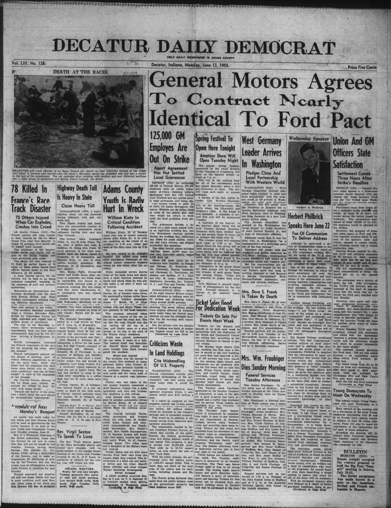

HN HN-603 · June 13, 1955 · Transportation & Maritime > Transportation Accidents & Safety Investigations > Road accidents
Source: Decatur Daily Democrat, p. 1 — original page; 24 Hours of Le Mans, history of the 1955 accident.
Report: A graphic photograph labeled “Death at the Races†showed rescue workers, while the report gave a contemporary toll of 78 killed and described driver Pierre Levegh's fatal high-speed crash on June 11.
Assessment: Later commonly cited totals are 83 spectators plus Levegh, or 84 deaths overall, rather than the early 78. The horrifying accident is documented; liability, mechanical sequence, and safety reforms cannot be established merely from a dramatic still photograph and first-day wire count.
Authentic images retrieved from Hoosier State Chronicles (Indiana State Library). Article crops are located using the archive's own OCR word coordinates and rendered at native crop resolution; article clips are assembled from the archive's own article-block images; page images marked "archive tiles" are stitched from the archive's own tiled page service at its 256-px tile cap; page images marked "issue PDF" are single pages rasterised from the archive's own issue PDF, with the page chosen by matching the headline against the PDF's text layer; page scans are reduced-size access renditions. No images were generated, mocked, or retouched.

Not yet acquired. Queued for provider-specific acquisition testing (see source-acquisition manifest).
URL (preserved verbatim): https://newspapers.library.in.gov/?a=d&d=DCDD19550613.1.1
Saved research report: Historical_Newspaper_Event_Research_603-627_2026-10-23.md
Evidence note: A newspaper report means a historical publication made a claim; it does not establish that claim as fact. Contemporary reporting is separated from later scholarly context and our own assessment.